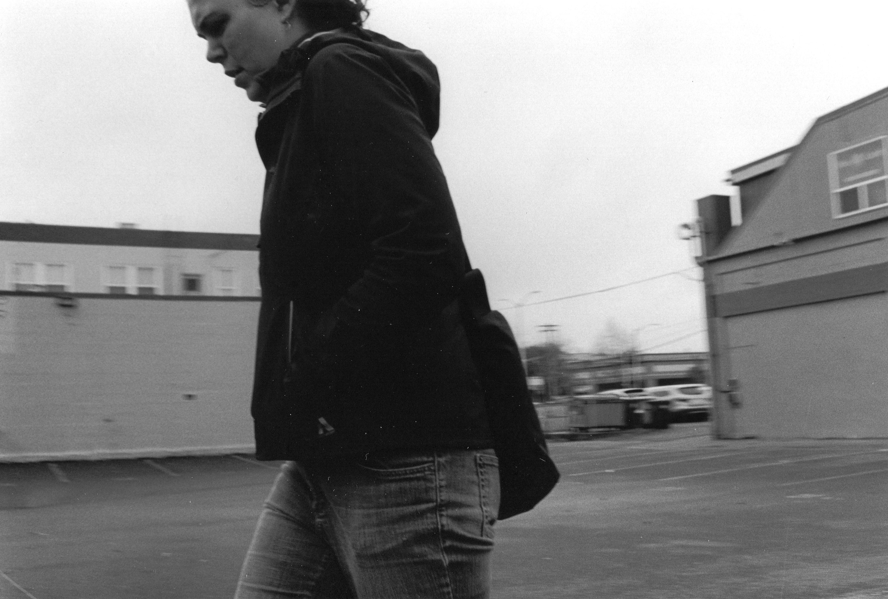

Photography allows us to revisist, and rethink, moments in our lives. What's most interesting to me, is how paradoxical photography can feel: photos preserve forever things that are absolutely gone. Photography captures single, fleeting, moments, and we know each frame only exists for a fraction of a second that is now gone as part of a larger movement, scene, or life; we know that time is passing, and every photo carries with it the acknowledgement that it literally represents the ephemeral. But at the same time, photos display this moment forever - we can stare into the past, and come back and back again to the smallest slips of time. With photography, we can contemplate on our own relationships with time in ways no other medium can.